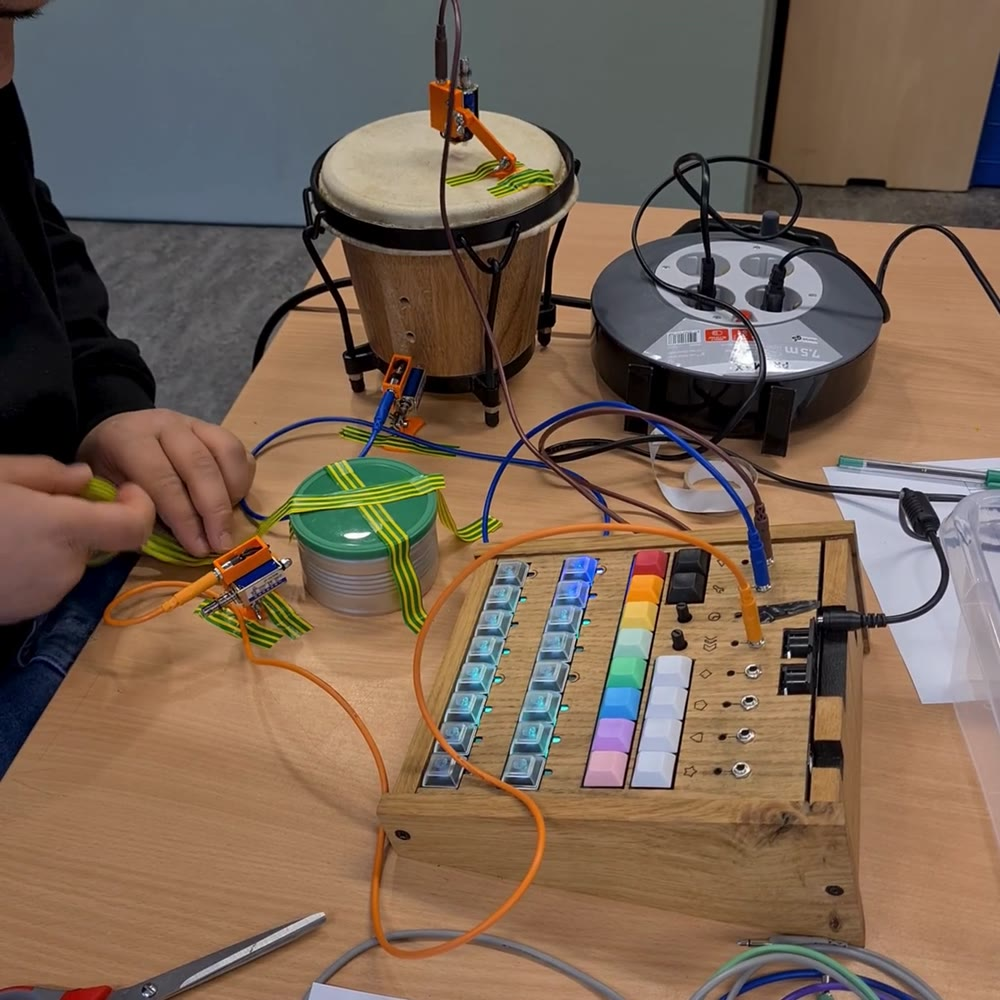

Drie dagen in de gevangenis
Drie dagen zat ik in de gevangenis. Opgelucht en trots.

Nee, niet zoals je nu denkt. Afgelopen week gaf ik een creatieve workshop op het Grinnike College, de school in de jeugdgevangenis in Breda.
Best spannend. Meerdere poortjes door, een pieper op zak, en geen mobiel om even te kijken hoe laat het is. Op een gegeven moment ging die pieper echt af. Akkefietje in de bieb, ik moest een half uur in mijn lokaal blijven. En dertig minuten alleen in de stilte zitten zonder even te doomscrollen is best lang.
De les zelf was heel vet. Ik moest me natuurlijk eerst met mijn enthousiasme bewijzen. Het bouwen zelf was daarna het mooiste. De jongeren wisten eerst niet zo goed wat het moest worden, maar dat vind ik juist de kracht: beginnen zonder verwachting maakt beginnen makkelijker. Er ontstonden vette beats en mooie kunstwerken.
Aan het einde van de dag mocht ik weer naar buiten.
Ook zoiets doen op jouw school? Kijk eens bij onze workshops en talks.